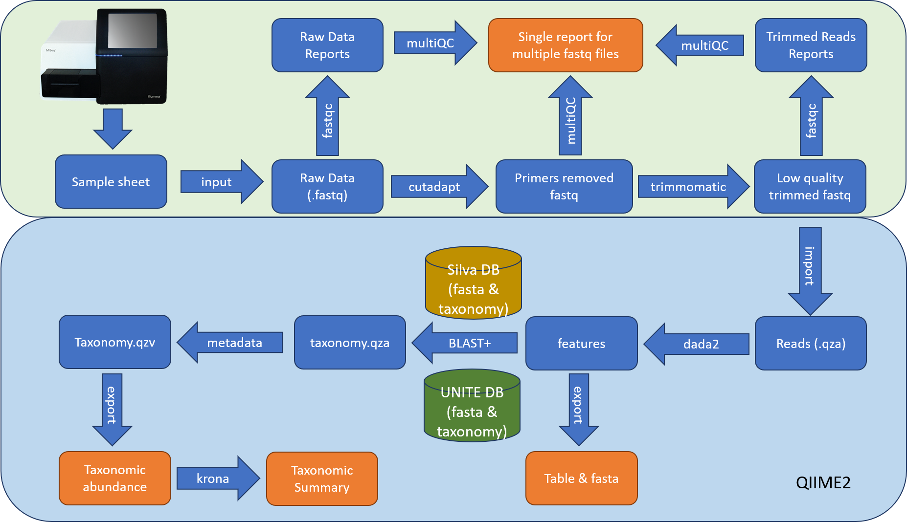
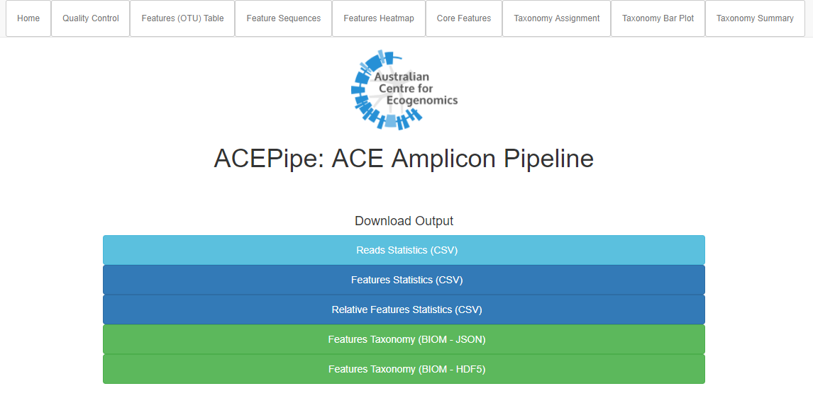

Description¶
The ACE pipeline (ACEPipe) currently works with the following genes - SSU (16S/18S) rRNA and fungal ITS. It consists of a quality control module, amplicon clustering with QIIME2, and taxonomy assignment on representative OTU sequences using BLAST. The pipeline can run both on the forward (R1) reads and both (R1 & R2) reads.
Workflow¶
Quality Control¶
All fastq files are processed with fastqc and the reports made available. All fastq files are then trimmed to remove primer sequence with Cutadapt, and quality trimmed to remove poor quality sequence using a sliding window of 4 bases with an average base quality above 15 using the software Trimmomatic. All reads are then hard trimmed to 250 bases, and any with less than 250 bases excluded.
Taxonomy¶
Fasta files are processed using QIIME2’s workflow with default parameters and taxonomy assignment. Representative features (OTU) sequences are then BLASTed against the reference database (Silva and UNITE). The main analysis output is an OTU table comprising the taxonomic classification of the best database match and a representative sequence for each OTU.
Result¶
We provide the fastqc reports, OTU tables (QIIME2 BIOM file, a filtered raw count table, and a filtered fraction table), processing statistics file and associated bar plot, and taxonomy summary.
